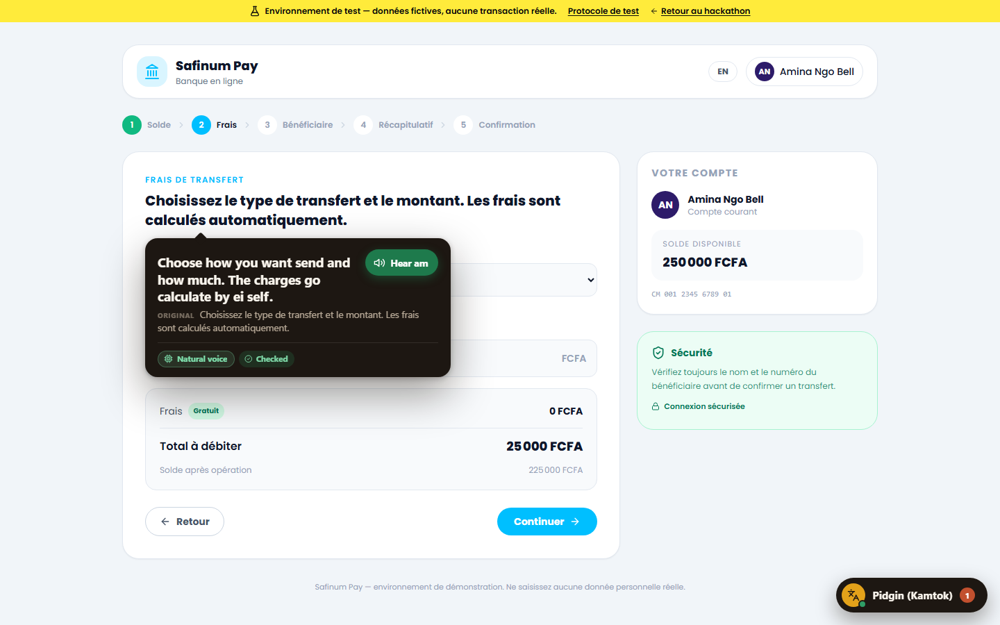
It answers each deliverable of section 6 of the challenge:
| Deliverable | Where |
|---|---|
| Brief description of the solution and the problem it addresses | Part 1 |
| Functional prototype or reproducible demonstration | Part 8 (installation and test) · source code and builds in the repository · tools/demo/ reproduces the video |
| Demonstration video (3 minutes or less) | Link on the cover |
| Technical document: architecture, integration approach, main dependencies, known limitations | Parts 2, 3, 9 and 10 (security in 4, new content in 5, user experience in 6) |
| National languages supported and method used to validate linguistic accuracy | Part 7 |
Banking, payment and microfinance interfaces in Cameroon are in French or English. Many people read and speak a national language more comfortably. A misread balance, fee, beneficiary or security warning can cost money, and some people avoid digital services for that reason.
Langwa is a browser extension that sits on top of an unchanged digital financial service and makes it understandable in a national language: today Cameroon Pidgin English (Kamtok) and Fulfulde, with seven more languages prepared. It reads the page, never modifies it, and explains it four ways:
Every translation can be heard in a natural voice that runs offline on the computer. Amounts, fees, names and references are locked: no translation can change them.
| Part | What it is |
|---|---|
| Browser extension | Chrome, Edge, Brave, Opera (langwa-chromium.zip, 425 KB) and Firefox (.xpi). A phone version runs as a userscript (Firefox for Android, Safari on iPhone). |
| Offline natural voice (optional) | A 55 KB download. One double-click installs it the first time (about 660 MB, once, with a live progress page and a Cancel button), then it starts in about 20 seconds and works without internet. |
| Website | {{websiteUrl}}: presentation, downloads and install steps, in English or French. |
| Contribution page | Native speakers translate the banking sentences on their phone and send them to the team on WhatsApp. A script merges them; nothing is published until a speaker validates it. |
| Requirement | How Langwa meets it | Shown in |
|---|---|---|
| 1. Interface language adaptation | Texts, buttons, labels, placeholders, instructions and messages are translated from a glossary of 291 banking sentences (French and English), with templates for sentences that contain values (Vous allez envoyer {amount} à {name}.). Langwa's own interface is translated too. | Fig. 4, 5, 7, 8 |
| 2. Transaction journey | The SAFINUM test journey is covered at every step, French and English pages: balance, fees, beneficiary, summary, confirmation. The assistant answers "what is this page", "what are the steps", "how much will I pay", "who receives the money", "what do I do now". | Fig. 4, 5, 7, 9 |
| 3. Preservation of financial information | Amounts with their sign, fees, phone and account numbers, references, dates and beneficiary names are masked before translation, restored character for character and verified. Any mismatch blocks the translation. Warnings keep their full force. | Fig. 9, 11, 13 |
| 4. Independent operation | No change to the service's code, data, styles or requests. Langwa draws in its own isolated layer. Switch it off and the page is exactly as before. Nothing in the code is specific to one bank. | Fig. 1, 6 |
| 5. Adaptation to new content | A live observer catches any new message. Known sentences are translated with their new values; unknown ones get a safe summary in the national language with validated key words and the exact amounts. | Fig. 10, 11 |
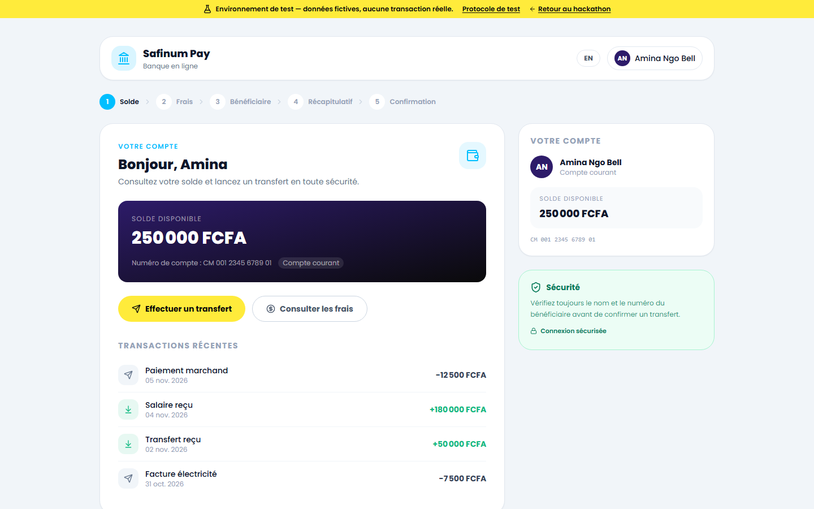
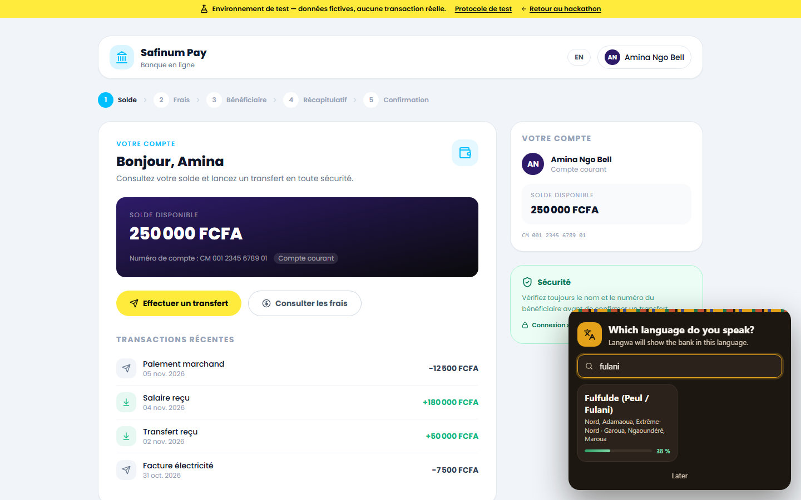
| Component | Role |
|---|---|
protect.js | Detection, masking, restoring and integrity check of financial values |
engine.js | Glossary and template matching, label/value split, message classification (error, security warning, success, information), safe summary, speech plan |
assistant.js | Questions about the page (typed, tapped or spoken), answered from what is on screen with exact values |
speech.js | Plays recordings, the offline voice or the browser voice; reads protected values exactly; first sentence first so speech starts fast |
content.js | Page reading, display layer, pointing, panel, whole-page mode, alerts, guided tour |
background.js | Language packs, voice status, optional local translation adapters, cache |
| Popup and settings pages | Language, display mode, voice; glossary editor for native speakers, import of contributions, safety test |
server/ (optional) | Offline voice: Africa TTS on 127.0.0.1:8770, installed by Start Langwa voice with a progress page |
standalone.js | Runtime for the phone version (userscript), same code as the extension |
node tools/build.mjs builds all of them with no dependencies.storage, activeTab, and network access to localhost only (the optional offline voice and translation servers).| Risk | Measure |
|---|---|
| A translation alters an amount, fee or number | Values are masked before translation and restored after. The integrity check requires every original value and rejects any extra digit. On failure the translation is blocked and a safe summary is shown. |
| A lost sign turns a debit into a credit | The sign is part of the protected value (-12 500 FCFA, +180 000 FCFA). Covered by unit tests. |
| Beneficiary name altered | Names after "à / to / pour / vers", values next to a label, values typed by the user and standalone proper names are kept verbatim. |
| Wrong meaning in a security warning | Warnings are detected, shown first and pushed as alerts. A message that calls itself a security alert stays a warning even if it also says something was blocked. Unknown warnings are never guessed: a validated warning sentence is shown with validated key words. |
| Partial audio changes the meaning | A recording is only played when every part of the sentence is recorded, so a missing "never" can never be skipped. |
| A gesture triggers a bank action | On phones, the tap that follows a long press is cancelled: a long press on "Confirm" never confirms. |
| Data leaving the device | The glossary, the assistant and the offline voice work on the computer. Optional machine translation only receives masked text, only on localhost. No account, no analytics, no data stored about the page. The only ways text can leave the computer are two browser features the user must switch on (see part 9), each labelled in the interface. |
| Code injection from the page | Page text is always inserted as plain text, never as HTML. |
| A website stopping the voice setup | The setup's Cancel request is accepted only from the local progress page; a website gets "403 refused". |
Every translation is labelled: Validated (native speaker), Not validated (draft), Unvalidated summary or Blocked. Protected values are shown as locked chips next to it.
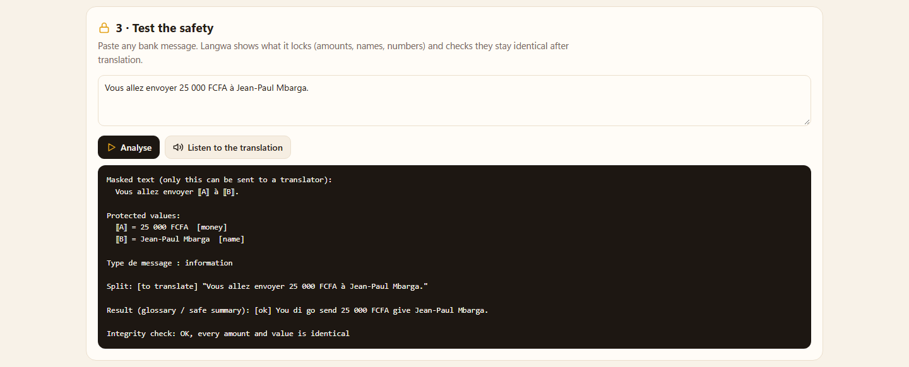
Il vous reste {count} tentatives).The test page was checked step by step, French and English: every text is covered in Pidgin; Fulfulde misses only two dropdown options ("Mobile Money", "Autre banque"), which wait for a speaker. tools/demo/check-test-page.mjs repeats this check.
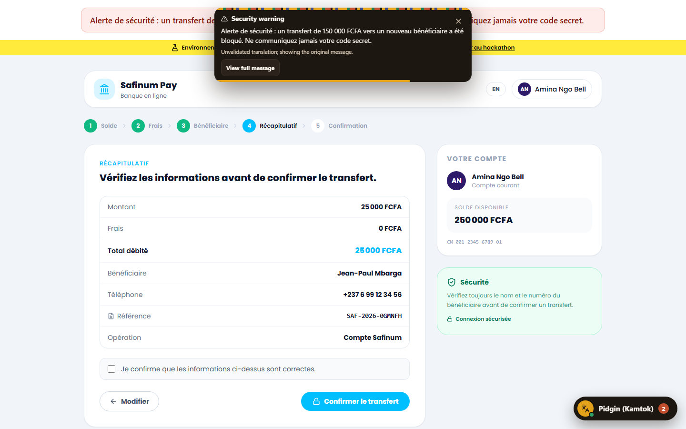
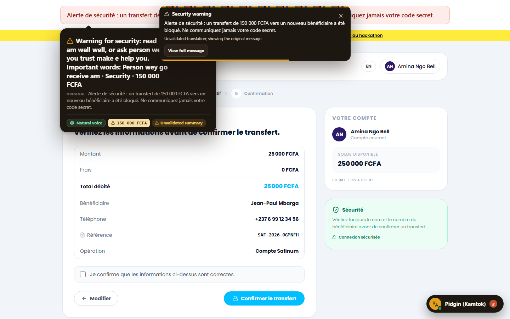
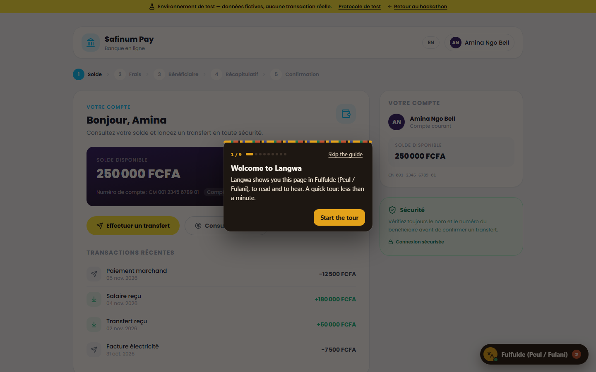
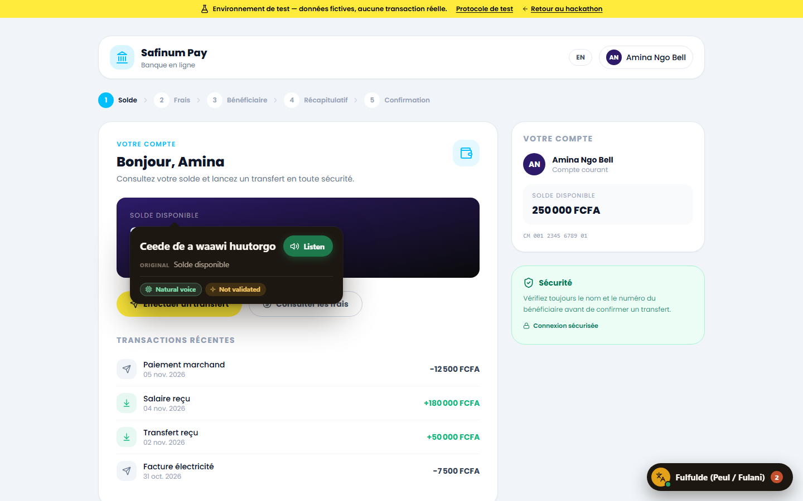
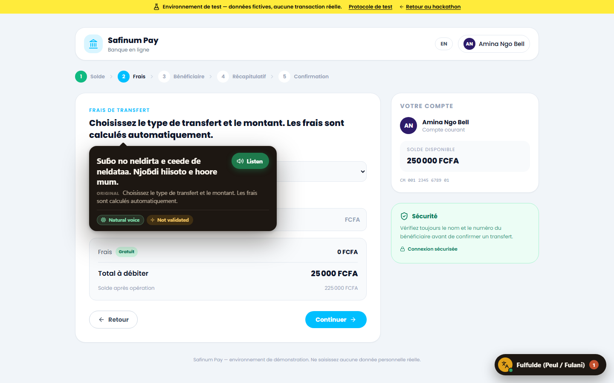
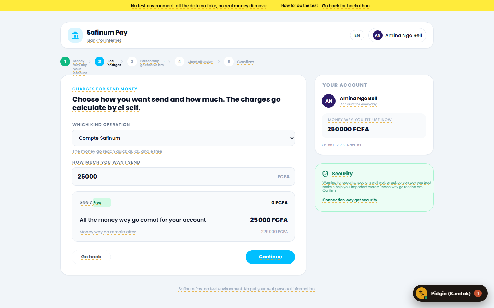
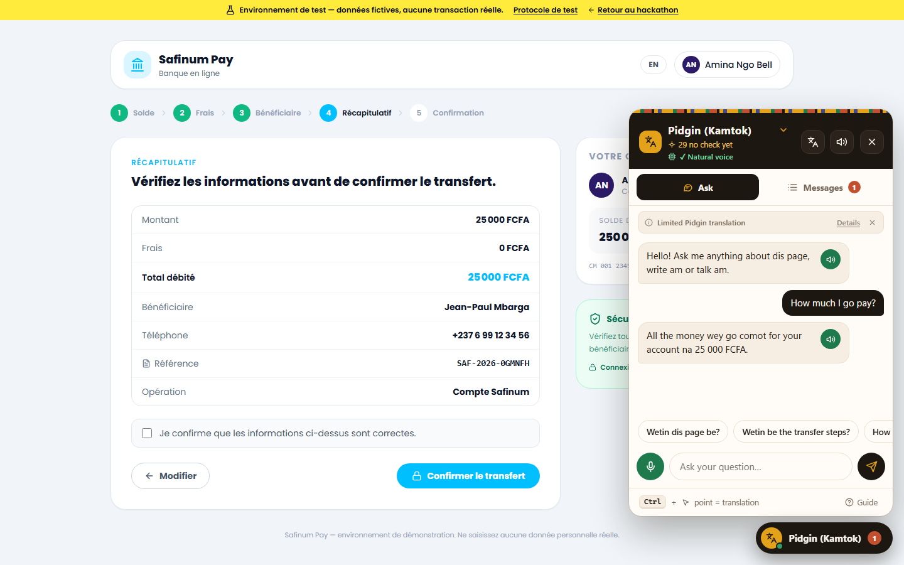
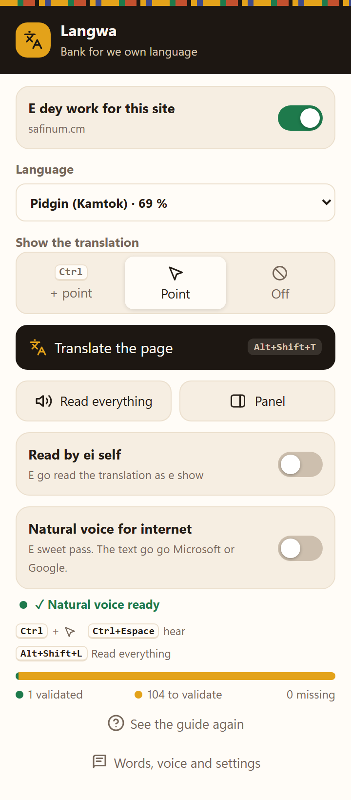
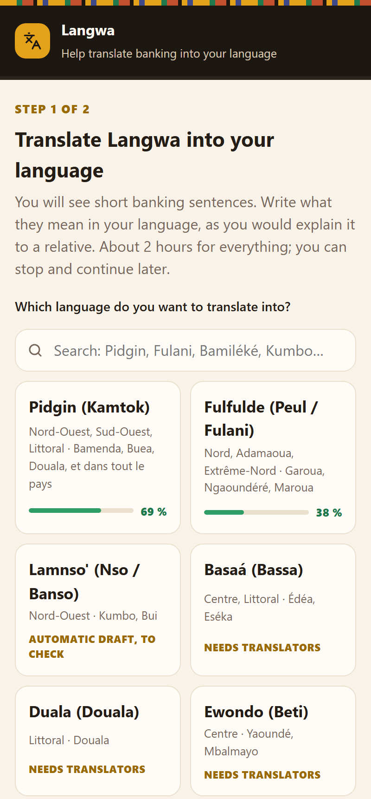
| Languages supported | {{languageName}} |
|---|---|
| Validated by | {{validators}} |
| Coverage (computed from the language files) | {{coverage}} |
| Language | Where it is spoken | Translated | Validated | Offline voice | Status |
|---|
The first drafts of the Pidgin and Fulfulde glossaries were written with AI assistance (Claude, Anthropic) and are shown to users as "Not validated" until a native speaker approves them. Cameroonian native speakers then corrected the Pidgin (for example "by ei self" for one thing, "Person wey go receive am" for the beneficiary). Nothing machine-made is ever marked as validated.
tools/merge-contributions.mjs merges them: it never replaces a validated sentence, lists disagreements between contributors for the validator, and rejects any translation whose {amount}, {name} markers differ from the French.tools/demo/check-test-page.mjs walks the test journey and lists any text left untranslated.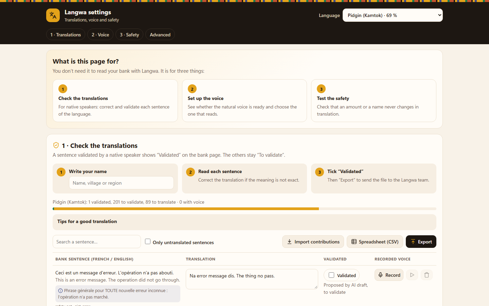
langwa-chromium.zip from {{websiteUrl}} and extract it.chrome://extensions (Edge: edge://extensions), turn on Developer mode.about:debugging → This Firefox → Load Temporary Add-on → the .xpi.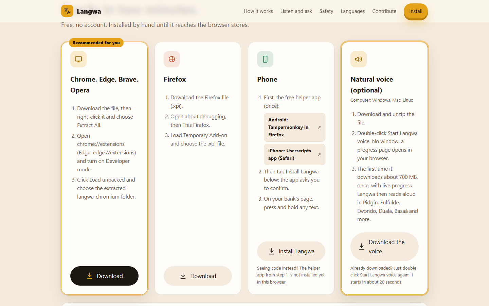
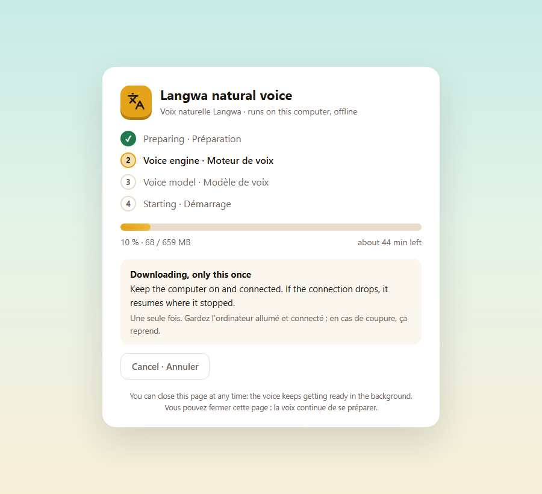
| Component | Use | Licence |
|---|---|---|
| Browser extension APIs (Manifest V3) | Runtime | Built into the browser |
| Vanilla JavaScript, no npm packages | Extension, userscript, website | Team's code |
| Icon shapes in the style of Lucide | Interface icons | ISC |
Node.js (node:test) | Unit tests (28) and build | MIT |
| Africa TTS 0.5.2 (AfriSpeech, on Kyutai Pocket TTS, about 100M parameters), espeak-ng | Optional offline natural voice | Weights CC-BY-NC-4.0; code MIT; espeak-ng GPL-3.0 |
| uv (Astral) and a private Python 3.12 | Installs the voice inside its own folder | MIT / Apache-2.0; PSF |
| Optional: Turaco (Pidgin) through Ollama; NLLB-200; Qwen2.5 through llama.cpp (Lamnso') | Local machine translation of masked text, drafts only | Various open licences; NLLB weights CC-BY-NC-4.0 |
| Photos on the website | Illustration | Unsplash licence, credited |
| Service | When | What is sent |
|---|---|---|
| Browser online voices (Microsoft in Edge, Google in Chrome) | Only if the user switches on "Online natural voices" (off by default; the switch says it) | The translated sentence being read aloud |
| Browser speech recognition (Google, Microsoft) | Only when the user speaks a question to the assistant, after a consent prompt | The recorded question |
| GitHub, PyPI, Hugging Face | Once, when the voice is installed | Download requests only |
| Vercel (website hosting) | When the website is opened | Nothing from the bank page |
| When a contributor chooses to send translations | The contributor's own translations |
The demo video and the screenshots use neither online voices nor online recognition.
Visual Studio Code, Git and GitHub, Microsoft Edge and Google Chrome, Node.js, Python, ffmpeg (demo video). Claude Code (Anthropic), an AI coding assistant, helped write and test the code, the documentation and the first translation drafts. Every translation draft is labelled "Not validated" until a native speaker approves it.
{{teamContribution}}
start-voice.cmd is kept as a fallback.<canvas>, inside cross-origin iframes or closed Shadow DOM, or inside images.